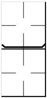

Substitution of pitchers
|  |
When a defense substitution consists of a change of pitcher, in order to make this event stand out more clearly, the horizontal line is emphasized with two oblique strokes. In this manner, when we come to make our calculations for the pitchers, we can immediately distinguish any pitching substitutions from the other defensive substitutions made. |
In case a pitcher is substituted, but takes a fielding position and afterwards returns to the mound to pitch, we add both pitching turns to each other.
|
|
In case a pitcher substitution and a fielding substitution occur at the same time, write both ways of recording the substitution.
|